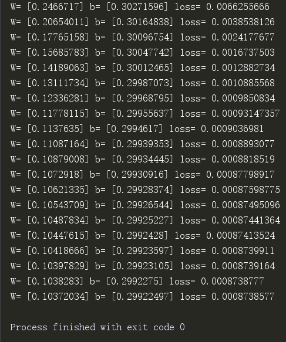
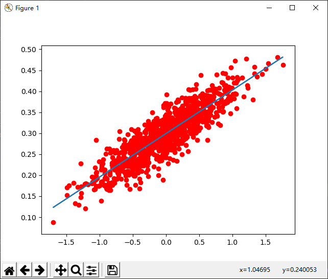

# -*- coding: utf-8 -*-
import tensorflow as tf
import numpy as np
import matplotlib.pyplot as plt
def real_func():
return
def emperor():
num_points = 1000
vectors_set = []
for i in range(num_points):
x1 = np.random.normal(0.0, 0.55)
y1 = x1 * 0.1 + 0.3 + np.random.normal(0.0, 0.03)
vectors_set.append([x1, y1])
x_data = [v[0] for v in vectors_set]
y_data = [v[1] for v in vectors_set]
# plt.scatter(x_data, y_data, c='r')
# plt.show()
W = tf.Variable(tf.random_uniform([1], -1.0, 1.0), name='W')
b = tf.Variable(tf.zeros([1]), name='b')
y = W * x_data + b
loss = tf.reduce_mean(tf.square(y - y_data), name='loss')
optimizer = tf.train.GradientDescentOptimizer(0.5)
train = optimizer.minimize(loss, name='train')
sess = tf.Session()
init = tf.global_variables_initializer()
sess.run(init)
# print('W=', sess.run(W), 'b=', sess.run(b), 'loss=', sess.run(loss))
for step in range(20):
sess.run(train)
print('W=', sess.run(W), 'b=', sess.run(b), 'loss=', sess.run(loss))
writer = tf.summary.FileWriter(r'C:\Users\Administrator\Desktop\meatwice\meatwice\01newCognition\reinforcement_learning\new_test_tensorflow/tmp', sess.graph)
plt.scatter(x_data, y_data, c='r')
plt.plot(x_data, sess.run(W) * x_data + sess.run(b))
plt.show()
if __name__ == "__main__":
emperor()运行结果：

